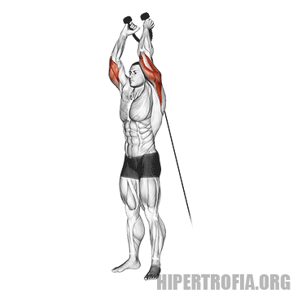
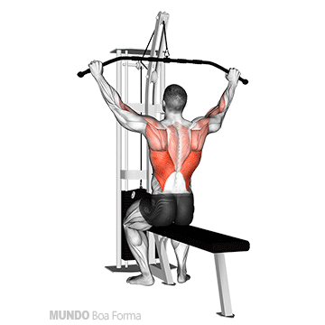
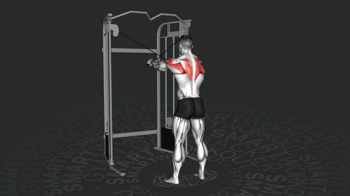
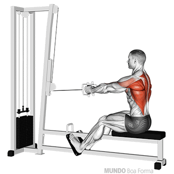
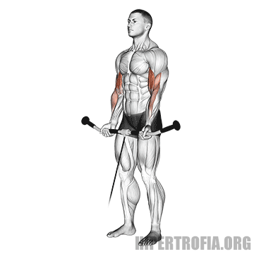
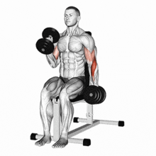
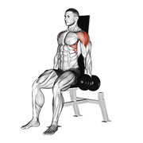
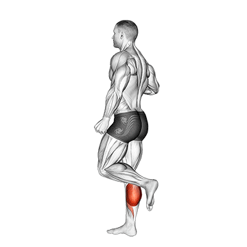
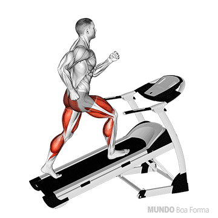

TREINO A: Peito, Ombros & Tríceps
Membros superiores - Foco em empurrar (com total apoio e segurança)
1. Supino Reto com Halteres (no Banco)
3 Séries
10 a 12 Reps

Deite completamente com a coluna apoiada no banco. Mantenha os pés firmes no chão ou sobre o banco se sentir mais estabilidade.
🛡️ Proteção: Costas apoiadas no banco eliminam qualquer sobrecarga na lombar.
2. Supino Inclinado com Halteres
3 Séries
10 a 12 Reps

Ajuste o banco em inclinação leve (30° a 45°). Empurre os halteres para cima de forma controlada.
3. Elevação Lateral Sentado
3 Séries
12 Reps

Sempre faça este exercício SENTADO com as costas bem encostadas no banco. Eleve os braços até a altura dos ombros.
🛡️ Proteção: Fazer sentado impede o balanço do tronco, protegendo a lombar.
4. Tríceps Pulley na Polia (Corda ou Barra)
3 Séries
12 Reps

Mantenha o corpo firme, cotovelos travados ao lado do tronco e estenda o braço para baixo.
5. Tríceps Francês na Polia Alta
3 Séries
12 Reps

De costas para a polia, faça a extensão dos cotovelos para a frente sem forçar as articulações.
TREINO B: Costas & Bíceps
Membros superiores - Foco em puxar (postura e alinhamento)
1. Puxada Alta Frente (na Polia/Aparelho)
3 Séries
10 a 12 Reps

Ajuste o apoio das pernas na máquina. Puxe a barra em direção à parte superior do peito, mantendo o tronco levemente inclinado para trás.
2. Remada Baixa Sentado (Triângulo)
3 Séries
12 Reps

Sentado na polia baixa, mantenha os joelhos levemente flexionados. Puxe em direção ao umbigo mantendo a coluna ereta.
🛡️ Proteção: Não dobre ou incline a coluna para frente e para trás. Mantenha-a estável.
3. Remada Unilateral com Halter (Serrote)
3 Séries
10 a 12 Reps / lado

Apoie um joelho e uma mão no banco. Puxe o halter no sentido do quadril, mantendo a coluna totalmente reta.
4. Rosca Direta na Polia Baixa
3 Séries
12 Reps

Use a barra reta ou W na polia baixa. Puxe a carga dobrando os cotovelos sem movimentar o tronco.
5. Rosca Martelo Sentado com Halteres
3 Séries
12 Reps

Sentado com as costas no encosto do banco, segure os halteres com as palmas voltadas para dentro.
🛡️ Proteção: Fazer sentado evita compensação e esforço involuntário no abdômen e lombar.
TREINO C: Pernas Básico & Panturrilhas
Treino simples e sem máquinas, foco em funcionalidade leve
1. Senta e Levanta do Banco (Agachamento Guiado)
3 Séries
10 a 12 Reps

Fique em pé na frente de um banco firme. Incline o quadril para trás e sente com controle. Assim que encostar, levante empurrando pelos calcanhares.
🛡️ Proteção: O banco limita a descida e protege joelhos e lombar de sobrecargas. Pode ser feito sem peso ou com um halter leve no peito.
2. Elevação Pélvica deitado no Colchonete
3 Séries
12 a 15 Reps
Deitado de costas no colchonete, joelhos dobrados e pés no chão. Eleve o quadril até alinhar com as coxas e aperte o glúteo.
🛡️ Proteção: Zero pressão na coluna. Fortalece glúteos e posterior sem exigir do abdômen.
3. Flexão de Joelhos em Pé na Polia
3 Séries
12 Reps / lado

Com a tornozeleira presa na polia baixa (ou usando uma caneleira leve), dobre o joelho trazendo o calcanhar em direção ao glúteo.
4. Panturrilha em Pé (na Parede ou Degrau)
4 Séries
15 a 20 Reps

Apoie as mãos na parede para equilíbrio. Suba nas pontas dos pés o máximo que puder e desça suavemente.
🚶♂️ Cardio Leve: Caminhada A bordo
15 a 20 min
Ritmo Moderado

Caminhada na esteira (sem inclinação excessiva) para estímulo cardiovascular leve e lubrificação articular.